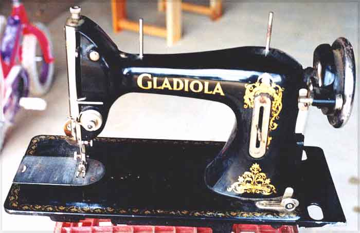

The NeedleBar
Lithgow Small
Arms Factory
Lithgow, NSW
Model: Gladiola
CB
Pictures courtesy of Rob & Lynne
Sanders
Front View

Maker's Name Decal
This page may not be reproduced
or distributed in part or in whole without the prior written permission of
the copyright owner